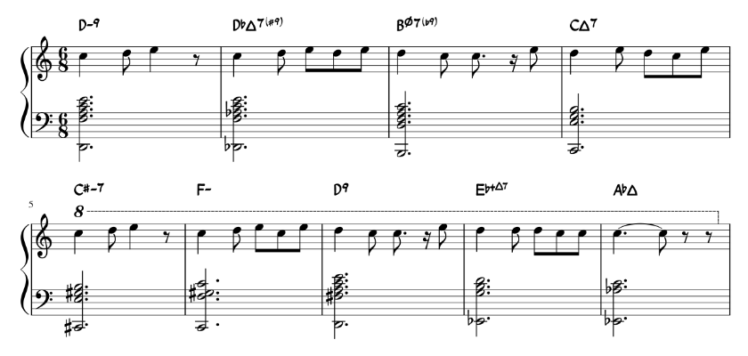

The personal blog of @megakite.
增十一和弦, 2018.
最新一期，呃……我也不知道具体是第几期好和弦的作业（
任务是只用 C D E 三个音写主旋律，并配上复杂和声。
先用一个 diatonic 的 D-9 开头。↙
然后根据色彩和声理论的高色差进行，在 D-9 后接一个低半音的大和弦，这里接了 bDΔ7(+9)。↙
继续高色差。在 bDΔ7(+9) 后接低全音的半减和弦，这里是 Bø7(-9)。↙
接着把 Bø7(-9) 当作 C 大调的 VII 级，解决到 CΔ7。↙
解决完毕之后……仍然在玩高色差。由 CΔ7 进行到高半音的小和弦，#C-7。↙
不得不说色彩和声还是非常有意思的，因为 #C-7 接到 F- 又是一个高色差进行。↙
好了，终于摆脱了色彩和声……接下来的 F-接 D9 没有特别强的关联，大约可以认为是非功能了（其实一开始是把这个当作 II7「重属和弦」的，但后来发现调性还是太模糊了）。↙
下面的思路可能比较不常见。将 D9 当作——我也不知道究竟是哪一个调的——VII 级，然后拆分和弦构成音：让根音 D 作为导音进行到 bE，高音 E 也以小九度下行到 bE，中间的一组三全音（#F 和 C）解决到 G 和 B，于是得到了一个 bE+ 和弦。再加一个大七度音 D，这就构成了一个 bE+Δ7 和弦。↙
最后是一个比较 common 的进行，由 bE+Δ7 解决到 bAΔ，全曲完毕。
在这首曲子里面，C D E 三个音在九个小节中对应的和弦内音或Tension分别是：①-7 1 9，②7 +15 +9；③-9 -3 11；④1 9 3；⑤-15 -9 -3；⑥5 9 -11；⑦-7 1 9；⑧13 7 -9；⑨3 +11 -13。
kite@theliquid.group
megakite214g@gmail.com